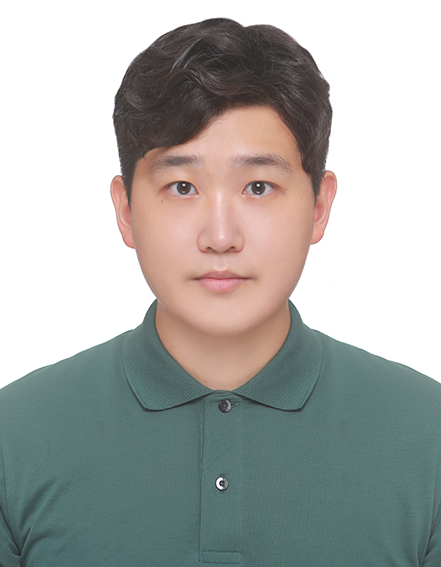

Welcome! I am an incoming PhD student in Economics at the Paris School of Economics, supervised by Prof. Antoine Bozio, working on optimal taxation and behavioral responses to taxation. I use administrative tax data and causal inference methods, with a regional focus on Korea.
Email: dwseo.econ@gmail.com
News
- July 2026Awarded the POSCO Overseas Fellowship, by POSCO TJ Park Foundation
- June 2026Presented “Missing Income and Missing People: Decomposing Survey Errors in Korea” (with Mo, Yang, and Hong) at the World Inequality Conference 2026, Paris